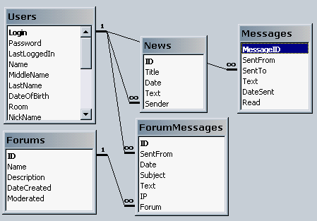
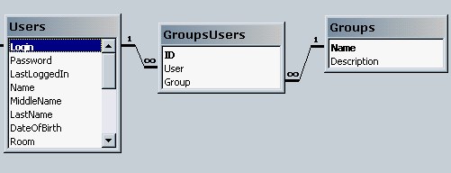

Рецепт приготовки интернет-портала
Николай Куртов, "Софтерра"
Интро
Случается так, что клиент вашей фирмы
испытывает голод. Конечно, здесь речь идет об информационном голоде. И это
очень пагубно сказывается на потенции клиента: в своем взаимодействии с
фирмой он становится вялым и не всегда представляет чего хочет. Наша
задача, как разработчиков аппетитнейших интернет-блюд, состоит в
приготовлении клиенту того, что ему так необходимо: гибкого и
интерактивного веб-сервиса, приправленного множеством вкусностей.
В качестве основной посудины выберем
Windows 2000 на IIS 5.0 (Internet Information Services). Это решение имеет
как преимущества, так и недостатки.
Плюсы:
- Легко администрируем
- Поддерживает все современные технологии
- Поддерживает ASP уже после установки
- Гибко интегрируется с большинством продуктов Microsoft через COM или
прямую поддержку (XML, ADO и все, что держится через COM)
- ASP - это не только VBScript или JavaScript
- Имеет современные средства защиты, построенные на базе сервисов
Windows NT domain и NTFS.
- Масштабируется на кластер Windows 2000
Минусы:
- Большинство компаний в рунете предоставляют хостинг не IIS, а Apache
- Требовательнее к аппаратным ресурсам, в отличие от решения Apache +
PHP4
Что же касается секьюрности/несекьюрности
решения, то тут все зависит только от повара: можно сделать незащищенный
IIS сервер и защищенный Apache, а можно и наоборот.
Что будем делать
Будем готовить портал, который
поддерживает такие важные для сегодняшнего интранетовского или
интернетовского решения функции как:
- Логины/Профайлы
- Новости
- Статьи
- Форумы
- Почта
- Общие файлы
- Просто упорядоченная информация, по которой нужно проводить
поиск
Это объем нескольких статей. В первой я
дам лишь общие понятия. В следующих затрону вопрос реализации отдельных
вкусностей в подробностях.
Данные - всему голова!
Сперва, необходимо полностью разработать
модель данных, модели их взаимосвязи и их доступности для различных
контекстов. Под контекстом я понимаю права доступа к тем или иным данным.
Для разработки структур данных мы можем воспользоваться Access 2000.

Рис 1. Взаимосвязи таблиц данных в Access 2000
В этом примере представлены таблицы для
базы данных пользователей, новостей, частных сообщений, форумов и
сообщений форумов. Очень важно определить связи между таблицами. Так вам
будет легче определять те поля, для которых необходимо индексирование.
Индексирование напрямую влияет на производительность системы: правильное
индексирование значительно ускоряет работу, в то же время неправильное -
замедляет. По-хорошему, все объекты и данные в системе должны иметь связь
на таблицу Users, поскольку у каждого объекта должен быть владелец
(owner). Для того, чтобы блюдо было действительно масштабируемым, советую
завести запись для пользователя Anonymous, под которую будут попадать все
незалогиненные пользователи. Это позволит создавать политику доступа и с
учетом этих пользователей. Часто необходимо, чтобы доступ к определенным
объектам имел не один человек, а несколько, объединенных некоторой
локальной группой защиты. Создание таких групп можно одновременно
скомбинировать с созданием групп рассылки.

Рис 2. Реализация групп пользователей.
Теперь в большинстве объектов можно будет
создавать поле SecurityGroup. Вы можете сами модифицировать решение таким
образом, чтобы в группу защиты можно было включать другие группы. Если
пойти немного дальше, то таблица GroupsUsers вместо поля User может
содержать хранимую процедуру для выборки необходимых пользователей из
таблицы Users. Реализация такого метода - тонкое кулинарное искусство,
поэтому оставим его для дальнейших опытов.
Смоделируйте все ваши бизнес-данные и
представьте их в виде таблиц, в добавление к описанным выше таблицам.
Замечание по поводу защиты. Очевидно, что
хранить пароли в базе в виде незашифрованного текста совсем плохо.
Рекомендую поискать в сети или зайти на www.activeserverpages.ru . Я видел
там activex компонент, предлагающий шифрование данных.
Ваши данные готовы, сэр!
Чистка и нарезка ASP
ASP (Active Server Pages) представляет
собой технологию выполнения скриптов на стороне сервера. По умолчанию
используется VBScript, хотя можно организовать работу через JScript.
Результат обработки asp-странички пользователь видит в виде html
странички. А вот как это выглядит на стороне сервера:
Mypage.asp
<%
Dim s
s=Request.Form("sName")
If s="" Then
S = "Unknown user"
End If
%>
<HTML>
<HEAD><TITLE>asp page text</TITLE></HEAD>
<BODY>
Hello to asp page, <% =s %>!<br>
<FORM METHOD=POST ACTION="mypage.asp">
Type your name please:
<INPUT TYPE=text NAME=sName>
<INPUT TYPE=Submit VALUE="Ok">
</FORM>
</BODY>
</HTML>
Этот простой пример из серии hello world
иллюстрирует работу ASP скриптов. Для тех, кто ничего из этого не понял,
есть светлый и правильный путь к документации по ASP, а мы вернемся к
основной теме.
Немного поэкспериментировав с
ASP-cкриптами, вы осознаете проблему того, что пора собирать внешний
интерфейс сайта. Прежде всего рекомендую продумать способы
представления каждой страницы на стороне сервера. Лучше всего нарисовать
всевозможные варианты. Чем меньше в ваших asp будет HTML кода, тем лучше.
Дизайн всегда полезно отвязывать от технической реализации. Как это
сделать ? На мой взгляд есть четыре очевидных способа:
- Использовать xml шаблоны для страниц. Каждая xml будет
обрабатываться на сервере при помощи ASP и отправляться пользователю в
виде html
- Использовать базы данных в качестве хранилища шаблонов станиц. Этот
способ быстрее предыдущего, однако, требует нетривиального
проектирования данных
- Разработать модель рендринга страниц в ASP
- Разработать ActiveX компоненты на VisualBasic, выполняющие
отображение своих кусочков данных в html, а затем использовать их в
результирующем asp.
Первые два варианта довольно комплексные:
стоит обратить на них внимание, если каждая ваша страничка на сайте может
быть отконфигурирована пользователем с целью отображения/неотображения
определенных элементов.
Третий вариант удобен, если сайт простой и
не требует распределенного компонентного подхода. Четвертый вариант хорош
тем, что будет исполняться быстрее третьего, причем решение будет
действительно компонентным. Описать компонентный подход в общем виде я
попытаюсь в следующей статье.
В общем случае, можно воспользоваться
третьим вариантом. Для этого нужно определить процедуры в ASP,
ответственные за отображение тех или иных блоков информации.
Например, на VBScript это будет выглядеть
так:
' // Отображает заголовок элемента
Sub PrintPartHeader(color, colWidth, caption)
Response.Write "<table bgcolor=" _
& "color & " width=" & colWidth & ">" _
& "<tr><td><b> " & caption & " " _
& "</b></td></tr></table>"
End Sub
' // Отображает завершающую часть элемента
Sub PrintPartFooter()
Response.Write "<hr>"
End Sub
Для JScript, лучше, конечно, пользоваться
объектно-ориентированным подходом.
Потом можно будет создать несколько
процедур, для каждого из отображений: форум, новости или частные
сообщения, при этом определившись с входными параметрами (где-то нужно
передать ID форума, где-то путь до файла и т.д). При создании
информационных сайтов рекомендуется использовать гибкий дизайн: страница
должна использовать все свободное место в зависимости от разрешения
экрана. Поэтому в качестве параметров рекомендую также передавать
некоторые свойства отображения, например, ширину.
Все сервисные функции и глобальные
переменные странички лучше всего вынести в один или несколько отдельных
asp файлов, которые поместить за пределами виртуального каталога. Это
скроет ваш код от посторонних глаз. А подключить эти файлы можно через
директиву:
<!--
подключить поддержку блока новостей
#includes file="inc\boards.asp"
-->
В современных системах используют новый
подход: разработка своего рода "скина" страницы на XML. Например, это
может выглядеть так:
<PAGELAYOUT SECURITY="BASIC">
<ROW HEIGHT="100" WIDTH="100%">
<HEADER/>
</ROW>
<ROW WIDTH="100%" HEIGHT="21">
<PATH/>
</ROW>
<ROW HEIGHT="100%">
<COLUMN><SEARCHBAND/><MAINMENU/></COLUMN>
<COLUMN><ARTICLE WIDTH="100%" HEIGHT="100%"/></COLUMN>
</ROW>
<ROW> : </ROW>
</PAGELAYOUT>
<SEARCHBAND/> представляется после
обработки XSL в виде отдельного объекта или ActiveX-а, который знает, как
себя отображать. Получается, что <SEARCHBAND/> перекодируется в:
<%
Set oSearchBand = CreateObject("MYSITE.SEARCHBAND")
oSearchBand.Width = "100%"
oSearchBand.Display(Response)
%>
Здесь создается объект SearchBand (который
был предварительно написан), затем рендрится в выбранное место. Все это
справедливо для всех остальных элементов. Идея скинов имеет смысл в том
случае, если планируется создать визуальный редактор layout-ов.
Очень важный выбор: разрабатывать ли на
VBScript или JScript ? Однозначного ответа дать нельзя, ведь у того и
другого есть достоинства и недостатки.
- JScript - объектно-ориентированный, позволяет создавать свои
объекты, но не поддерживает передачи параметров ByRef, как в VBScript. В
этом случае логику сайта можно реализовывать на объектах JScript.
- VBScript - не позволяет создавать своих объектов. В этом случае
логику сайта лучше организовывать в ActiveX компонентах. Это, кстати, и
работать (вариться) будет быстрее.
Плохим стилем считается использование и
JScript и VBScript в одном проекте.
Для подключения данных используем механизм
ADO, обсуждавшийся в этом разделе ранее. Важный момент - выделение всего
доступа к данным в отдельные объекты. При реализации логики программы вы
должны оперировать вашими собственными объектами, а не рекордсетами.
Подключаемся к данным вот так:
<%
Dim oConn
Dim filePath
Dim Index
' Получить физический путь до базы Server2
filePath = Server.MapPath("..\Server2.mdb")
' Данные лежат за пределами виртуального каталога!
' Это важно!
Set oConn = Server.CreateObject("ADODB.Connection")
oConn.Open "Provider=Microsoft.Jet.OLEDB.4.0;Data Source=" _
& filePath
%>
База заложена
Все, что будет реализовано дальше, зависит
от грамотного определения бизнес-процесса, вашего системного подхода и
творческого потенциала. Тема ASP-решений на этом не заканчивается. Пишите
мне, задавайте вопросы, предлагайте решения. Уверен, я найду пару рецептов
в своей поваренной книге.